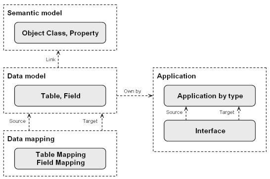

EBX5's Data Exchange add-on allows you to export and import data. You can initiate import and export in the following ways:
A 'by default' mode allows the end-users–with limited IT knowledge–to easily export and import data when source and target data structures are similar. Because this mode uses a direct mapping between the source and the target, a specific data mapping configuration isn't needed.
When the source and target data structures are different, the extended mode allows IT staff to manage user-defined data mapping configurations. This mode is used to change the name of the field from the source to the target, to transform the data during the data flow processes, to aggregate or split data values, etc.
Data mapping configuration is based on basic concepts of Tables and Fields. When a company wants to strengthen business representation of data mapping configurations, Tables and Fields can be connected to business concepts also known as Object Classes and Properties, respectively. The addition of this business level improves the data lineage audit and encourages actual information governance.
For further information beyond the online help, refer to the User guide (PDF) and the release notes.
EBX5's Data Exchange Add-On relies on a repository that collects all data mapping configurations. This repository automatically updates when a user executes a mapping operation that invokes the default data mapping.
Data mapping configurations can be enriched by creating links from Tables and Fields to corresponding business concepts also known as Object Class and Property items. This vocabulary comes from the ISO11179 standard also used in the EBX5's Information Governance add-on.
The use of the semantic model is not mandatory to create data mapping configurations or to enable import, export and data transfer. Once the semantic model is configured, it facilitates the management of the data mapping configurations as follows:
Business data lineage.
Automatic data mapping.
Integration with the governance process.

At the table level, Data Exchange services allow you to export and import data in the CSV, Excel and XML formats.
At the data set level–in addition to being able to import and export in Excel and XML–Data Exchange services allow you to transfer data. The transfer copies data directly between EBX tables.
If the table is not defined in the data mapping configuration when you attempt to export to XML, 'Default XML format' displays as the only available target application. This default format, provided by the add-on, allows you to easily get an XML file and doesn't require a specific data mapping configuration.
The add-on automatically identifies which data mapping to apply in order to import the data into the table. When the 'Default XML' is declared in the header of the imported XML file, then the default data mapping is applied. A UI result message provides an overview of the import process, as illustrated below.
To export or import an XML file with a data structure that is not compliant with the 'Default XML' type, you can manually configure a user-defined data mapping. In most cases the XML file you want to get already exists, and you can reuse it as a template to automatically feed the configuration. The add-on can automatically analyze your XML file to generate the XML configuration.
Data transfer is used to copy data from one EBX table to another. If the tables share the same data model, the add-on automatically manages the transfer.However, transferring data between tables that don't share the same data model requires a bespoke data mapping configuration.
The Excel and CSV export and import processes are based on the previous version of Data Exchange, called 'Add-on for Microsoft® Excel'. You can refer directly to the online help for this part of the add-on.
In the current version of Data Exchange Add-on, the user-defined configuration is not used for the Excel and CSV data flows.
In order to manage user-defined data mapping configurations, a portfolio of services is available depending on the application type. These services are located on the 'Application by type' table in the 'Data exchange' data space under the EXB5 'Administration' tab.
The creation of user-defined data mapping configurations requires IT skills. Based on these configurations, end-users can export, import and transfer the data easily, all the technical aspects of data mapping configuration are hidden from them.
The Data Exchange repository for data mapping configurations is located in the 'Data exchange' data set under the EBX5 'Administration' tab.The 'Application' domain contains the portfolio of applications with the interface configuration.An interface is used to configure the source and the target applications involved in a data flow.
The 'Semantic model' domain contains the Object Class and Property items used to link the Tables and Fields to the semantic layer. The Semantic model is not mandatory to configure data mapping. However, it allows you to improve data lineage and integration with Information governance.The 'Data model domain' contains the configuration for Tables and Fields.The 'Data mapping' domain contains the actual data mapping configuration applied at the table level, and then the field level.
Multi-occurs complex data type, association object, selection node, user defined attribute (UDA).
Split and aggregation of fields.
Transformation of fields.
Data lineage.
Graphical view of the data mapping configurations.
Disclaimer
Oracle and Java are registered trademarks of Oracle and/or its affiliates. Other names may be trademarks of their respective owners. Product names, logos, brands, and other trademarks featured or referred to are the property of their respective trademark holders. These trademark holders are not affiliated with Orchestra Networks, our products, or our website. They do not sponsor or endorse our product or any of our solutions.